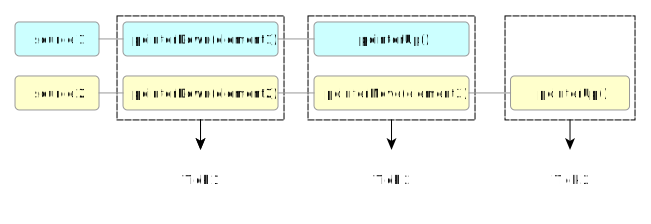

Get Window Handle
| HTTP Method | Path Template |
|---|---|
| GET | /session/{session id}/window/handle |
The Get Window Handle command returns the window handle for the current top-level browsing context. It can be used as an argument to Switch To Window.
The remote end steps are:
If the current top-level browsing context is no longer open, return error with error code no such window.
Let data be a new JSON Object.
Set the property "
value" on data to the value of the window handle associated with the current top-level browsing context.- Return success with data data.
Get Window Handles
| HTTP Method | Path Template |
|---|---|
| GET | /session/{session id}/window/handles |
The Get Window Handles command returns a list of window handles for every open top-level browsing context. The order in which the window handles are returned is arbitary.
The remote end steps are:
Let handles be a JSON List.
For each top-level browsing context in the remote end, push the associated window handle onto handles.
Let body be a JSON object with the property "
value" set to handles.- Return success with data body.
Switch To Window
| HTTP Method | Path Template |
|---|---|
| POST | /session/{session id}/window |
The Switch To Window command is used to select the current top-level browsing context for the current session, i.e. the one that will be used for processing commands.
The remote end steps are:
Let handle be the result of getting a property named "
handle" from the parameters argument.If handle is equal to the associated window handle for some top-level browsing context in the current session, set the session's current top-level browsing context to that browsing context, and return success with data null.
Otherwise, return error with error code no such window.
Close Window
| HTTP Method | Path Template |
|---|---|
| DELETE | /session/{session id}/window |
The remote end steps for the Close Window command are:
If the current top-level browsing context is no longer open, return error with error code no such window.
If there are no more open top-level browsing contexts, then close the session.
- Return the result of running the remote end steps for the Get Window Handles command.
Switch To Frame
| HTTP Method | Path Template |
|---|---|
| POST | /session/{session id}/frame |
The Switch To Frame command is used to select the current top-level browsing context or a child browsing context of the current browsing context to use as the current browsing context for subsequent commands.
The remote end steps are:
If the current browsing context is no longer open, return error with error code no such window.
Let id be the result of getting a property named "
id" from the parameters argument.Run the substeps of the first matching condition:
- id is null
-
Set the current browsing context to the current top-level browsing context.
- id is a
Numberobject -
If id is less than 0 or greater than 216 – 1, return error with error code no such frame.
Let window be the associated window of the current browsing context’s active document.
If id is not a supported property index of window, return error with error code no such frame.
Let child window be the
WindowProxyobject obtained by determining the value of an indexed property of window with index id.Set the current browsing context to new window’s browsing context.
- id represents a web element
-
Note that representing a web element will have to do the same document checks, or something.
Let element be the element represented by id.
If element is not a
frameoriframeelement, return error with error code no such frame.Set the current browsing context to element’s nested browsing context.
- Otherwise
-
Return error with error code no such frame.
Return success with data null.
WebDriver is not bound by the same origin policy, so it is always possible to switch into child browsing contexts, even if they are different origin to the current browsing context.
Switch to Parent Frame
| HTTP Method | Path Template |
|---|---|
| POST | /session/{session id}/frame/parent |
The Switch to Parent Frame command sets the current browsing context for future commands to the parent of the current browsing context.
The remote end steps for Switch to Parent Frame are:
If the current browsing context is no longer open, return error with error code no such window.
If the current browsing context is not equal to the current top-level browsing context, set the current browsing context to the parent browsing context of the current browsing context.
Return success with data null.
Resizing and Positioning Windows
WebDriver provides commands
for interacting with the operating system window
containing the current browsing context.
Because different operating system's window managers provide different abilities,
not all of the commands in this section can be supported by all remote ends.
Where a command is not supported,
an unsupported operation error is returned.
The Get Window Size command
returns the size of the operating system window corresponding
to the current top-level browsing context.
The remote end steps are:
Can this whole operation be unsupported?
If the current top-level browsing context is no longer open,
return error with error code no such window.
Let width be the width in
CSS reference pixels
of the operating system window containing
the current top-level browsing context,
including any browser chrome and externally drawn window decorations.
Let height be the height in
CSS reference pixels
of the operating system window containing
the current top-level browsing context,
including any browser chrome and any externally drawn window decorations.
Let body be a new JSON Object initialised with:
Return success with data body.
In some browsers the dimensions of the browser
including window decorations are provided by
the proprietary The Set Window Size command
alters the size of the operating system window
corresponding to the current top-level browsing context.
The remote end steps are:
If the current top-level browsing context is no longer open,
return error with error code no such window.
If the remote end does not support
the Set Window Size command for
the current top-level browsing context for any reason,
return error with error code unsupported operation.
Let width be the result of
getting a property named If width is not an integer, or is less than 0,
return error with error code invalid argument.
Let height be the result of
getting a property named If height is not an integer, or is less than 0,
return error with error code invalid argument.
Window sizes outside the allowed range.
Set the width,
in CSS reference pixels,
of the operating system window containing
the current top-level browsing context,
including any browser chrome and externally drawn window decorations
to a value that is as close as possible to width.
Set the height,
in CSS reference pixels,
of the operating system window containing
the current top-level browsing context,
including any browser chrome and externally drawn window decorations
to a value that is as close as possible to height.
Return success with data null.
The specification does not guarantee
that the resulting window size will exactly match that which was requested.
In particular the implementation is expected to clamp values
that are larger than the physical screen dimensions,
or smaller than the minimum window size.
Particular implemetations may have other limitations
such as not being able to resize in single-pixel increments.
The Maximize Window command
invokes the window manager-specific “maximize” operation, if any,
on the window containing the current top-level browsing context.
This typically increases the window to the maximum available size
without going full-screen.
The remote end steps are:
If the current top-level browsing context is no longer open,
return error with error code no such window.
If the remote end does not support
the Maximize Window command
for the current top-level browsing context for any reason,
return error with error code unsupported operation.
Run the implementation-specific steps
to increase the dimensions of the operating system level window
containing the current top-level browsing context
to the maximum available size allowed by the window manager.
The Fullscreen Window command
invokes the window manager-specific “full screen” operation, if any,
on the window containing the current top-level browsing context.
This typically increases the window to the size of the physical display
and can hide browser UI elements such as toolbars.
The remote end steps are:
If the current top-level browsing context is no longer open,
return error with error code no such window.
If the remote end does not support
the Fullscreen Window command
for the current top-level browsing context for any reason,
return error with error code unsupported operation.
Run the implementation-specific steps,
which should have the effect of making the dimensions of
the window containing the current top-level browsing context
as close as possible to the dimensions of the display containing the window,
and may hide browser-provided UI such as toolbars.
Return success with data null.
Get Window Size
HTTP Method
Path Template
GET
/session/{sessionId}/window/size
width"
height"
window.outerWidth
and window.outerHeight properties.
Set Window Size
HTTP Method
Path Template
POST
/session/{session id}/window/size
width
from the parameters argument.
height
from the parameters argument.
Maximize Window
HTTP Method
Path Template
POST
/session/{session id}/window/maximize
Fullscreen Window
HTTP Method
Path Template
POST
/session/{session id}/window/fullscreen
Elements
A web element is an abstraction used to identify an element when it is transported across the protocol, between remote- and local ends.
The web element identifier is a constant
with the string "element-6066-11e4-a52e-4f735466cecf".
Each element has an associated web element reference (a UUID) that uniquely identifies the the element across all browsing contexts. The web element reference for every element representing the same element is the same.
An ECMAScript Object represents a web element if it has a web element identifier own property holding a UUID value.
Each browsing context has an associated list of known elements. When the browsing context is discarded, the list of known elements is discarded along with it.
When getting a known element by a UUID reference:
For each element in the current browsing context’s list of known elements:
If element’s web element reference matches reference, return success with data element.
Return error with error code no such element.
To create a web element reference for an element element:
For each known element of the current browsing context’s known elements:
If known element equals element, return success with known element’s web element reference.
Let new reference be the result of generating a new UUID.
Set element’s web element reference to new reference.
Append element to the known elements of the current browsing context.
Return success with data element’s web element reference.
When asked to serialise the element element:
Let object be a new JSON Object with properties:
- web element identifier
Value of element’s web element reference.
Return object.
When required to deserialise the web element by a JSON Object object that represents a web element:
If object has no own property web element identifier, return error with error code invalid argument.
Let reference be the result of getting the web element identifier property from object.
Let element result be the result of getting a known element by reference reference.
If element result is a success, let element be element result’s data.
Otherwise, return element result.
Return success with data element.
A stale element is a reference to a node that has been disconnected from the current browsing context’s DOM. To determine if an element is stale, run the following substeps:
Let document be the current browsing context’s document element.
If element is not in the same tree as document, return true.
Otherwise return false.
Finding Elements in a document
Warning: This section has not yet been redefined to match the routing requests model, and uses old concepts and definitions. Please do not rely on it yet.
When the findElement() or findElements() WebDriver Command is called the following must be parameters after the local end has made a request to the remote end:
- Let using contain the Element Location Strategy.
If it is not a valid stategy:
- Set the HTTP Response status code to 500
- Let status be equal to
Invalid Selector - Let value be a statement that the strategy is invalid. It MAY return a list of valid search strategies.
- Let value contain a string that will be passed to the Element Location Strategy call.
If value is an empty string or null:
- Set the HTTP Response status code to 500
- Let status be equal to Invalid Selector
- Let value to a stating that the strategy is invalid. It MAY return a list of valid search strategies.
- Call the relevant Element Location Strategy and return what is described in findElement() or findElements() WebDriver Command described below.
findElements()
Warning: This section has not yet been redefined to match the routing requests model, and uses old concepts and definitions. Please do not rely on it yet.
When there is a need to find multiple elements on a document that we can return to the local end we use the following algorithm:
| HTTP Method | Path Template |
|---|---|
| POST | /session/{session id}/elements |
- Let result be equal to an empty list
- Let queryResult be a NodeList returned from Element Location Strategy
- Repeat for every value in queryResult if not an empty set else return result
- Let id be the unique identifier for the DOMElement.
- Append
{"element-6066-11e4-a52e-4f735466cecf": id}to result
- Return result. The object returned will look like the following:
{ "value": [{"element-6066-11e4-a52e-4f735466cecf": id}, {"element-6066-11e4-a52e-4f735466cecf": id}] }
When there is a need to search from an element to find the next WebElement we use the following algorithm:
| HTTP Method | Path Template |
|---|---|
| POST | /session/{session id}/element/{element id}/elements |
- Let result be equal to an empty list.
- Let element be the start node for the query in the Element Location Strategy
- Let queryResult be a NodeList returned from Element Location Strategy
- Repeat for every value in queryResult if not an empty set else return result
- Let id be the unique identifier for the DOMElement.
- Append
{"element-6066-11e4-a52e-4f735466cecf": id}to result
- Return result. The object returned will look like the following:
{ "value": [{"element-6066-11e4-a52e-4f735466cecf": id}, {"element-6066-11e4-a52e-4f735466cecf": id}] }
findElement()
Warning: This section has not yet been redefined to match the routing requests model, and uses old concepts and definitions. Please do not rely on it yet.
| HTTP Method | Path Template |
|---|---|
| POST | /session/{session id}/element |
- Let id be an identifier for a DOMElement returned from Element Location Strategy.
If a NodeList is returned, the first element in the NodeList MUST be used.
If id is empty:
- Let the HTTP response status code be 501
- Let status contain the error
no such element - Let value contain the details of the search contained in using and value above.
If an error is returned from Element Location Strategy do the following.(todo describe how the error is returned)
- Let the HTTP response status code be 501
- Let status contain the error
invalid selector - Let value contain the details of the search contained in using and value above.
- Let result be equal to
{"element-6066-11e4-a52e-4f735466cecf": id} - Return result. The object returned will look like the following:
{ "value": {"element-6066-11e4-a52e-4f735466cecf": id} }
When searching from an element from another element the following algorithm should be used:
| HTTP Method | Path Template |
|---|---|
| POST | /session/{session id}/element/{element id}/element |
- Let element be the start node for the query in the Element Location Strategy
- Let id be a unique identifier for the DOMElement returned from Element Location Strategy.
If a NodeList is returned, the first DOMElement in the NodeList MUST be used.
If id is empty:
- Let the HTTP response status code be 501
- Let status contain the error
no such element - Let value contain the details of the search contained in using and value above.
If an error is returned from Element Location Strategy do the following.(todo describe how the error is returned)
- Let the HTTP response status code be 501
- Let status contain the error
invalid selector - Let value contain the details of the search contained in using and value above.
- Let result be equal to
{"element-6066-11e4-a52e-4f735466cecf": id} - Return result. The object returned will look like the following:
{ "value": {"element-6066-11e4-a52e-4f735466cecf": id} }
Get Active Element
| HTTP Method | Path Template |
|---|---|
| GET | /session/{session id}/element/active |
Get Active Element returns the active element of the current browsing context’s document element.
The remote end steps are:
If the current top-level browsing context is no longer open, return error with error code no such window.
Let active element be the
activeElementattribute of the the current browsing context’s document element.Serialise the element that is active element and let it be known as active web element.
Return success with data active web element.
Element Location Strategies
Warning: This section has not yet been redefined to match the routing requests model, and uses old concepts and definitions. Please do not rely on it yet.
All element location strategies MUST return elements in the order in which they appear in the current document.
CSS Selectors
Strategy name: css selector
If a browser supports the
CSS Selectors API ([[!SELECTORS-API]]) it MUST support locating elements by
CSS Selector. If the browser does not support the browser CSS Selector spec it MAY choose to implement locating
by this mechanism. If the browser can support locating elements by CSS Selector, it MUST set the "cssSelector" capability to boolean true when responding to the newSession(). Elements MUST be returned in the same order as if "querySelectorAll" had been called with the Locator's value. Compound selectors are allowed.
ECMAScript
Finding elements by ecmascript is covered in the ecmascript part of this spec.
Link Text
Strategy name: link text
This strategy MUST be supported by all WebDriver implementations.
This strategy MUST return all "a" elements with visible text exactly and case sensitively equal to the term being searched for.
This is equivalent to:
elements = driver.find_elements(by = By.TAG_NAME, value = "a")
result = []
for element in elements:
text = element.text
if text == search_term:
result.append(element)
Where "search_term" is the link text being searched for, and "result" contains the list of elements to return.
Partial Link Text
Strategy name: partial link text
This strategy MUST be supported by all WebDriver implementations.
This strategy is very similar to link text, but rather than matching the entire string, only a subset needs to match. That is, this MUST return all "a" elements with visible text that partially or completely and case sensitively matches the term being searched for.
This is equivalent to:
elements = driver.find_elements(by = By.TAG_NAME, value = "a")
result = []
for element in elements:
text = element.text
if text.search(seach_term) != -1:
result.append(element)
Where "search_term" is the link text being searched for, and "result" contains the list of elements to return.
XPath
Strategy name: xpath
All WebDriver implementations MUST support finding elements by XPath 1.0 [[!XPATH]] with the edits from section 3.3 of the [[!html51]] specification made. If no native support is present in the browser, a pure JS implementation MAY be used. When called, the returned values MUST be equivalent of calling "evaluate" function from [[DOM-LEVEL-3-XPATH]] with the result type set to ORDERED_NODE_SNAPSHOT_TYPE (7).
Element Displayedness
The visibility of an element
is guided by what is perceptually visible to the human eye.
In this context, an element's displayedness
does not relate to the visibility
or display
style properties [[!CSS3BOX]].
The approach used by WebDriver to ascertain an element's visibility is based on crude approximations about its nature and relationship in the tree. An element is in general to be considered visible if any part of it is drawn on the canvas within the bounderies of the viewport.
When asked to normalize style pixel values to floating point for a value s of the type string:
Let trimmed string be a substring of s where the suffix "
px" is removed.Let pixels be the result of parsing trimmed string as a float.
If pixels is not a valid float or the previous operation did not succeed, return
0.0.Round off pixels using a ceiling function so that it has no more than four decimals.
Return pixels.
To normalize style pixel values to floating point
is almost equivalent to calling
parseFloat
from [[!ECMA-262]] with the exception that
non-valid float return values are returned as 0.0.
The element displayed algorithm is a boolean state where true signifies that the element is displayed and false signifies that the element is not displayed. To compute the state on element:
If the attribute
hiddenis set, return false.If the computed value of the
displaystyle property is "none", return false.Not really sure what this means, needs review:
If it has a [[!CSS3-2D-TRANSFORMS]] or [[!CSS3-3D-TRANSFORMS]] style property that gives a negative X or Y coordinates to the canvas, return false.
If element is the document's root element, that is
document.documentElement:If the computed value of the
background-colorproperty is "transparent", run these substeps:If element is an HTML
HTMLelement [[!html51]], and the computed value of thebackground-colorstyle property of the firstBODYelement descendant of the element in tree order, relative to that element, is also "transparent", return false. Otherwise return true.
If element is an
optionoroptgroupelement, and element's parent node is aselectelement:Apply the element displayed algorithm on element's parent node.
If the return value is false, abort these steps and return that value.
If element is a
mapelement:Let any images visible be a boolean initially set to false.
For each
imgelement, image element, in the document with anameattribute matching the value of element'susemapattribute, run these substeps:Run the element displayed algorithm on image element and set any images visible to any images visible bitwise OR its return value.
If any images visible is true, abort these steps and return its value.
If element is an
areaelement:For each ancestral element parent, in tree order:
If parent is a
mapelement, apply the element displayed algorithm on it.If the return value is false, abort these steps and return that value.
Otherwise apply step 7.1 on parent.
If element is a [[!DOM4]] text node, return true.
If it has equal to or more than one direct descendant elements:
Let visible children be a boolean initially set to false.
For each direct descendant element child:
Let rectangle be the DOMRect returned by calling
getBoundingClientRecton child.If the value of the
heightproperty of rectangle is greater than zero CSS reference pixels, and the value of thewidthproperty of rectangle is greater than zero CSS reference pixels:Set visible children to visible children bitwise OR true.
For each ancestral element parent, in tree order:
Apply the element displayed algorithm to parent.
If the return value is false, abort these steps and return that value.
If parent is a block element box and the computed values of either
overflow-xoroverflow-yis "hidden":Let parent dimensions be the
DOMRectthat is the first element of theDOMRectListarray returned by callinggetClientRectson parent.Let element dimensions be the
DOMRectthat is the first element of theDOMRectListarray returned by callinggetClientRectson element.Let parent style be the computed style of parent.
Return false if any the following conditions evaluate to false:
element dimension's
topis less than (parent dimension'sbottom− the normalized style pixel float value of parent style'sborderBottomWidth).element dimension's
bottomis less than (parent dimension'stop− the normalized style pixel float value of parent style'sborderTopWidth).element dimension's
leftis less than (parent dimension'sright− the normalized style pixel float value of parent style'sborderRightWidthcasted as a float).element dimension's
rightis less than (parent dimension'sleft− the normalized style pixel float value of parent style'sborderLeftWidthcasted as a float).
Run step 10 on the parent elements of parent, if any.
Return true.
Element State
To calculate the absolute position of an element, element:
Let x be 0.
Let y be 0.
While element’s offsetParent is not null:
Set x to (x + element’s offsetLeft).
Set y to (y + element’s offsetTop).
Set element to element’s offsetParent.
Return a pair of (x, y).
When a node is said to be not in the same tree as another node, other, the following steps must be taken on node:
If node’s ownerDocument attribute is not other, return true.
If the result of calling node’s
compareDocumentPositionwith other as argument isDOCUMENT_POSITION_DISCONNECTED(1), return true.Return false.
Is Element Displayed
| HTTP Method | Path Template |
|---|---|
| GET | /session/{session id}/element/{element id}/displayed |
The Is Element Displayed command is used to determine the element displayedness of a web element.
The remote end steps are:
If the current top-level browsing context is no longer open, return error with error code no such window.
Let visible be a boolean initially set to false.
Let element result be the result of getting a known element by parameter element id.
If element result is a success, let element be element result’s data.
Otherwise, return element result.
If element is stale, return error with error code stale element reference.
Apply the element displayed algorithm to element and set visible to its return value.
Let body be a new JSON Object with the "
value" member set to element displayed.Return success with data body.
Is Element Selected
| HTTP Method | Path Template |
|---|---|
| GET | /session/{session id}/element/{element id}/selected |
Is Element Selected determines if the referenced
element
is selected or not.
This operation only makes sense on
input elements
of the Checkbox-
and Radio Button states,
or option elements.
The remote end steps are:
If the current top-level browsing context is no longer open, return error with error code no such window.
Let element result be the result of getting a known element by reference element id.
If element result is a success, let element be element result’s data.
Otherwise, return element result.
If element is stale, return error with error code stale element reference.
Let selected be the value corresponding to the first matching statement:
- element is
an
inputwith atypeattribute in the Checkbox- or Radio Button state The result of element’s checkedness.
- element is
an
optionelement The result of element’s selectedness.
- Otherwise
- False.
- element is
an
Let body be a JSON Object with the "
value" member set to selected.Return success with data body.
Get Element Attribute
| HTTP Method | Path Template |
|---|---|
| GET | /session/{session id}/element/{element id}/attribute/{name} |
The Get Element Attribute command will return the attribute of a web element.
The remote end steps are:
If the current top-level browsing context is no longer open, return error with error code no such window.
Let element result be the result of getting a known element by reference element id.
If element result is a success, let element be element result’s data.
Otherwise, return element result.
If element is stale, return error with error code stale element reference.
Let name be equal to "name" from match a request. if name is undefined return error with error code invalid argument.
- Let result be the result of the first appropriate step below:
If name is a boolean attribute:
The first matching statement if the element has the attribute:
true'true'.
- Otherwise
Null.
Otherwise:
The result of getting the attribute by name.
Let body be a JSON Object with the "
value" member set to result.Return success with data body.
Get Element Property
| HTTP Method | Path Template |
|---|---|
| GET | /session/{session id}/element/{element id}/property/{name} |
The Get Element property command will return the result of getting a property of a element.
The remote end steps are:
If the current top-level browsing context is no longer open, return error with error code no such window.
Let element result be the result of getting a known element by reference element id.
If element result is a success, let element be element result’s data.
Otherwise, return element result.
If element is stale, return error with error code stale element reference.
- Let result be the result of getting a property with
name from the element.
If result is
undefinedset result's value toNull. Let body be a JSON Object with the "
value" member set to result.Return success with data body.
Get Element CSS Value
| HTTP Method | Path Template |
|---|---|
| GET | /session/{session id}/element/{element id}/css/{property name} |
The Get Element CSS Value command retrieves the computed value of the given CSS property of the given web element.
The remote end steps are:
If the current top-level browsing context is no longer open, return error with error code no such window.
Let element result be the result of getting a known element by parameter element id.
If element result is a success, let element be element result’s data.
Otherwise, return element result.
If element is stale, return error with error code stale element reference.
Let computed value be the computed value of parameter property name from element’s style declarations.
Let body be a JSON Object with the "
value" member set to computed value.- Return success with data body.
getElementText()
Warning: This section has not yet been redefined to match the routing requests model, and uses old concepts and definitions. Please do not rely on it yet.
| HTTP Method | Path Template |
|---|---|
| GET | /session/{session id}/element/{element id}/text |
The following definitions are used in this section:
- Whitespace
- Any text that matches the ECMAScript regular expression class
\s. - Whitespace excluding non-breaking spaces
- Any text that matches the ECMAScript regular expression
[^\S\xa0] - Block level element
- A block-level element is one which is not a table cell, and whose effective CSS display style is not in the set ['inline', 'inline-block', 'inline-table', 'none', 'table-cell', 'table-column', 'table-column-group']
- Horizontal whitespace characters
- Horizontal whitespace characters are defined by the ECMAScript regular expression
[\x20\t\u2028\u2029].
The expected return value is roughly what a text-only browser would display. The algorithm for determining this text is as follows:
Let lines equal an empty array. Then:
- if the element is in the
headelement of the document, return an empty string otherwise carry on with the algorithm below. - For each descendent of node, at time of execution, in order:
- Get whitespace, text-transform, and then, if descendent is:
- a node which is not displayed, do nothing
- a [[!DOM4]] text node let
textequal thenodeValueproperty of descendent. Then:- Remove any zero-width spaces (\u200b, \u200e, \u200f), form feeds (\f) or vertical tab feeds (\v) from
text. - Canonicalize any recognized single newline sequence in
textto a single newline (greedily matching(\r\n|\r|\n)to a single \n) - If the parent's effective CSS whitespace style is 'normal' or 'nowrap' replace each newline (\n) in
textwith a single space character (\x20). If the parent's effective CSS whitespace style is 'pre' or 'pre-wrap' replace each horizontal whitespace character with a non-breaking space character (\xa0). Otherwise replace each sequence of horizontal whitespace characters except non-breaking spaces (\xa0) with a single space character - Apply the parent's effective CSS text-transform style as per the CSS 2.1 specification ([[!CSS21]])
- If
last(lines)ends with a space character andtextstarts with a space character, trim the first character oftext. - Append
texttolast(lines)in-place
- Remove any zero-width spaces (\u200b, \u200e, \u200f), form feeds (\f) or vertical tab feeds (\v) from
- an element which is displayed. If the element is a:
- BR element: Push '' to
linesand continue - Block-level element and if
last(lines)is not '', push '' tolines.
- BR element: Push '' to
- If element is a TD element, or the effective CSS display style is 'table-cell', and last(lines) is not '', and
last(lines)does not end with whitespace append a single space character tolast(lines)[Note: Most innerText implementations append a \t here] - If element is a block-level element: push '' to
lines
- Get whitespace, text-transform, and then, if descendent is:
- The string MUST then have the white space normalised as defined in the [[!XPATH]] normalize-space function which is then returned.
If the ELEMENT does not represent a Document element, or it represents a Document element that is no longer attached to the document's node tree, then the WebDriver implementation MUST immediately abort the command and return a stale element reference error. If the top level browsing context currently receiving commands is no longer open a no such window error MUST be raised.
Get Element Tag Name
| HTTP Method | Path Template |
|---|---|
| GET | /session/{session id}/element/{element id}/name |
The Get Element Tag Name command returns the qualified tag name name of the given web element.
The remote end steps are:
If the current top-level browsing context is no longer open, return error with error code no such window.
Deserialise the web element from parameters, and let it be known as element result.
If element result is an error, return it with its error code.
Let element be element result’s data.
If element is stale, return error with error code stale element reference.
Let qualified name be the result of getting element’s tagName content attribute.
Let body be a JSON Object with the "
value" member set to qualified name.Return success with data body.
Get Element Rect
| HTTP Method | Path Template |
|---|---|
| GET | /session/{session id}/element/{element id}/rect |
The Get Element Rect command returns the dimensions and coordinates of the given web element. The returned value is a dictionary with the following members:
- x
- X axis position of the top-left corner of the web element relative to the current browsing context’s document element in CSS pixels.
- y
- Y axis position of the top-left corner of the web element relative to the current browsing context’s document element in CSS pixels.
- height
- Height of the web element’s rectangle in CSS pixels.
- width
- Width of the web element’s rectangle in CSS pixels.
The remote end steps are:
If the current top-level browsing context is no longer open, return error with error code no such window.
Deserialise the web element from parameters, and let it be known as element result.
If element result is an error, return it with its error code.
Let element be element result’s data.
If the element is stale, return error with error code stale element reference.
Calculate the absolute position of element and let it be coordinates.
Let rect be element’s DOMRect.
Let body be a new JSON Object initialised with:
Return success with data body.
Is Element Enabled
| HTTP Method | Path Template |
|---|---|
| GET | /session/{session id}/element/{element id}/enabled |
Is Element Enabled determines if the referenced element is enabled or not. This operation only makes sense on form controls.
The remote end steps are:
If the current top-level browsing context is no longer open, return error with error code no such window.
Let element result be the result of getting a known element by reference element id.
If element result is a success, let element be element result’s data.
Otherwise, return element result.
If element is stale, return error with error code stale element reference.
Let enabled be a boolean initially set to true.
Set enabled to false if a form control is disabled.
Let body be a JSON object with the "
value" member set to enabled.Return success with data body.
Executing Script
Open questions: What happens if a user's JS triggers a modal dialog? Blocking seems like a reasonable idea, but there is an assumption that WebDriver is not threadsafe. What happens to unhandled JS errors? Caused by a user's JS? Caused by JS on a page? How does a user of the API obtain the list of errors? Is that list cleared upon read?
When required to JSON deserialize with argument value, and optional argument seen, a remote end must run the following steps:
If seen was not provided, let seen be an empty set.
Jump to the first appropriate step below:
- If value is
null, or has typeBoolean,NumberorString: Return success with data value.
- If value is an
Objectthat represents a web element: Return the result of running the deserialize the web element algorithm with object value.
- If value if value is
an
Arrayobject or anObjectobject: Return the result of running the clone an object algorithm with arguments value and seen, and the JSON deserialize algorithm as the clone algorithm.
- Otherwise:
Return error with error code javascript error.
- If value is
When required to make a JSON clone with argument value, a remote end must run the following steps:
Let seen be an empty set.
Return the result of calling the internal JSON clone algorithm with arguments value and seen.
When required to run the internal JSON clone algorithm with arguments value and seen, a remote end must run the following algorithm:
Run the substeps of the first matching statement:
- value is
undefinedornull Return success with data
null.- value has type
Boolean,Number, orString Return success with data value.
- value is an
ElementNode Return the result of creating a web element with argument value.
If value is in seen, return error with error code javascript error.
Add value to seen.
- value is
a
NodeList,HTMLCollection,Arrayobject, orObjectobject -
If value is in seen, return error with error code javascript error.
Add value to seen.
Return the result of running the clone an object algorithm with arguments value and seen, and the internal JSON clone algorithm as the clone algorithm.
- Otherwise
Return error with error code javascript error.
- value is
When required to clone an object with arguments value and seen and clone algorithm clone algorithm, run the following steps:
Let result be the value of the first matching statement:
- value is a
NodeList,HTMLCollection, or ECMAScriptArrayobject A new
Arrayobject, whichlengthproperty has the result of getting a property named "length" from value.- Otherwise
A new
Objectobject.
- value is a
For each enumerable own property in value, run the following substeps:
Let name be the name of the property.
Let source property value be the result of getting a property named name from value. If doing so causes script to be run, and that script throws an exception, return error with error code javascript error.
Let cloned property result be the result of calling the clone algorithm with arguments source property value and seen.
If cloned property result is a success, set a property of result with name name and value equal to cloned property result’s data.
Otherwise, return cloned property result.
The steps for extracting the script arguments from a request, are:
If the current browsing context is no longer open, return error with error code no such window.
Let script be the result of getting a property named
scriptfrom the parameters argument.If script is not a
String, return error with error code invalid argument.Let args be the result of getting a property named
argsfrom the parameters argument.If args is not an
Objector its[[\Class]]internal property is notArrayorObject, return error with error code invalid argument.Let arguments be a List consisting of a json deserialization of each item in args with the order preserved.
Return success with data script and arguments.
When required to execute a function body with arguments body and arguments, a remote end must run the following steps:
Let window be the associated window of the current browsing context's active document.
Let environment settings be the environment settings object for window.
Let script environment be the script execution environment for JavaScript obtained from environment settings.
If body is not parsable as a FunctionBody or if parsing detects an early error, return error with error code javascript error.
If body begins with a Directive Prologue that contains a Use Strict Directive then let strict be true, otherwise let strict be false.
Using the script execution environment script environment, let function be the result of calling create a function object with parameter list of an empty List, body body, scope of the global environment and strict flag strict.
Let script be a new script.
Let script's code entry-point be function.
Let script's settings object object be script settings.
Invoke the
[[\Call]]internal method of function, providing window as the this value and parameters as the argument values. If doing so does not produce an exception, let result be success with data set to the return value from this function call. Otherwise let result be error with code javascript error.If result is an error, return result.
Otherwise let json data be a JSON clone of result's data.
Return success with data json data.
Execute Script
| HTTP Method | Path Template |
|---|---|
| POST | /session/{session id}/execute |
The Execute Script command executes a JavaScript function in the context of the current browsing context and returns the return value of the function.
The remote end steps are:
Let script arguments be the result of extracting the script arguments from a request with argument parameters.
If script arguments is an error, return script arguments.
Let body and arguments be script arguments’ data.
Let result be the result of calling execute a function body, with arguments body and arguments.
If result is an error, return result.
Otherwise let value be result’s data.
Let data be a new
Object.Set the property
valueof data to value.Return success with data data.
Execute Async Script
| HTTP Method | Path Template |
|---|---|
| POST | /session/{session id}/execute_async |
The Execute Async Script command causes JavaScript to execute as an anonymous function. Unlike the Execute Script command, the result of the function is ignored. Instead an additional argument is provided as the final argument to the function. This is a function that, when called, returns its first argument as the response.
The remote end steps are:
Let script arguments be the result of extracting the script arguments from a request with argument parameters.
If script arguments is an error, return script arguments.
Let body and arguments be script arguments’ data.
This next step might not quite set up all the right machinery.
Let webdriver callback result be a flag which can have three values:
unset,expired, orset, with thesetvalue having associated data. Initially it is in theunsetstate.Let callback be a function whose
[[\Call]]internal method runs the execute async script callback algorithm initialized with argument webdriver callback result.Append callback to arguments.
Let result be the result of calling execute a function body with arguments body and arguments.
If result is an error, return result.
Wait for webdriver callback result to enter the
setstate, or for session script timeout milliseconds to expire, whichever happens sooner.If the previous step completed due the session script timeout being reached, set webdriver callback result to
expiredand return error with error code script timeout.Otherwise, let result be webdriver callback result’s data.
If result is an error, return result.
Let value be result’s data.
Let data be a new
Object.Set the property
valueof data to value.Return success with data data.
The execute async script callback algorithm is initialized with a single argument webdriver callback state. It defines a function with a single optional argument result. When this function is called, the following steps are run:
If webdriver callback state is not in the
unsetstate, returnundefined.If result is not present, let result be
null.Let json result be a JSON clone of result.
Set the webdriver callback state to
setwith data json result.Return
undefined.
Cookies
This section describes the interaction with
cookies
as described in the [[!html51]].
When retrieving and setting a cookie it MUST be in the format of a Cookie.
Conformance tests for this section can be found in the webdriver module under the "cookies" folder.
When returning Cookie objects, the server SHOULD include all optional fields
it is capable of providing the information for.
The Get Cookie command
returns a list of either a single matching cookie,
or all cookies associated with
the active document’s
address.
The remote end steps are:
If the current browsing context is no longer open,
return error with error code no such window.
Let result be an initially empty JSON List.
Let cookies be a list of all cookies [[!RFC6265]]
in the cookie store associated with
the active document’s
address.
For each cookie in cookies,
switch on matching name:
Append a serialized cookie of cookie to result,
and break out of the loop.
Append a serialized cookie to result.
Return success with data result.
A serialized cookie is created with the following algorithm:
Let serialized cookie be a JSON Object
initialised with the following properties:
The value of cookie’s The value of cookie”s If present, the value of the attribute
with Otherwise, null.
If present, the value of the attribute
with Otherwise, null.
If present, the value of the attribute
with Otherwise, null.
If present, the value of the attribute
with Otherwise, null.
The Add Cookie command
adds a single cookie to the cookie storage associated with
the active document’s
address.
The remote end steps are:
If the current browsing context is no longer open,
return error with error code no such window.
Let cookie be the result of getting a property
named " If cookie is not a JSON Object,
return error with error code unable to set cookie.
If the current top-level browsing context’s
document element
is a cookie-averse Set the value is cookie-name,
as defined in [[!RFC6265]], to the value of entry with key name.
If nameis undefined,
return error with error code unable to set cookie.
Set the value is cookie-value,
as defined in [[!RFC6265]], to the value of entry with key value.
If valueis undefined,
return error with error code unable to set cookie.
If cookie has an entry with key path
set attribute-value of the last attribute in the cookie-attribute-list
with an attribute-name of "Path".
If cookie has an entry with key domain
set attribute-value of the last attribute in the cookie-attribute-list
with an attribute-name of "Domain".
If cookie has an entry with key secure
set attribute-value of the last attribute in the cookie-attribute-list
with an attribute-name of "Secure".
If cookie has an entry with key expiry
set attribute-value of the last attribute in the cookie-attribute-list
with an attribute-name of "Expires".
Store the contents cookie in the user agent cookie manager
following the steps described in
Storage Model in [[!RFC6265]].
If there is an error during this step,
return error with error code unable to set cookie.
Return success with data null.
The Delete Cookie command
allows you to delete either a single cookie by parameter name,
or all the cookies associated with
the active document’s
address
if name is undefined.
The remote end steps are:
If the current browsing context is no longer open,
return error with error code no such window.
Let cookies be a list of all cookies [[!RFC6265]]
in the cookie store associated with
active document
address.
For each cookie in cookies, if:
Add an attribute to the Return success with data null.
Get Cookie
HTTP Method
Path Template
GET
/session/{session id}/cookie/{name}
cookie-name
name"
cookie-name.
value"
cookie-value.
path"
attribute-name "Path"
from cookie’s attribute-list.
domain"
attribute-name "Domain"
from cookie’s attribute-list.
secure"
attribute-name "Secure"
from cookie’s attribute-list.
expiry"
attribute-name "Expires"
from cookie’s attribute-list
in milliseconds since since midnight, January 1 1970 UTC
using the format described in [[!RFC1123]].
Add Cookie
HTTP Method
Path Template
POST
/session/{session id}/cookie
cookie" from the parameters argument.
Document object,
return error with error code invalid cookie domain.
Delete Cookie
HTTP Method
Path Template
DELETE
/session/{session id}/cookie/{name}
cookie-name
attribute-list of cookie
with attribute-name of Expires,
and set its value to a time in the past.
Interactions
Warning: This section has not yet been redefined to match the routing requests model, and uses old concepts and definitions. Please do not rely on it yet.
The WebDriver API offers two ways of interacting with elements, either with a set of low-level "do as I say" actions, or a high-level "do as I mean" set of actions. The former are offered to allow precise emulation of user input. The latter are offered as a convenience to cover the common case, and can conceivably be implemented on top of the lower level primitive operations.
Interactions can be used to emulate single input actions as well as
multiple, simultaneous actions.
Terms:
(NOTE: these are by no means the final terms, I needed them to make the prose easier to follow)
low-level action: The smallest operation an input source can do. These are used to build chains of actions. Example: keyDown
action chain: A chain of low-level actions
input source: The source from which the inputs will originate. MUST support 'keyboard', 'mouse' and 'touch'
source: The object currently acting on the source. For example, in a 'touch' environment, if two fingers are acting on a touchscreen, you will have two sources of input.
Interactable elements
User actions that operate on an element require the element to be interactable. The following conditions must be met for the element to be considered interactable:
- The element MUST be displayed, as defined in section 10.1.
- The element MUST NOT be disabled. "Disabled" is defined as:
- If the current document is being processed as an HTML document, the element MUST be considered disabled if it does not support the disabled attribute (according to the [[!html51]] spec), or if the disabled attribute is set in the case where that attribute is present.
Low-Level Actions
The low level actions provide a mechanism for precisely stating how a user can interact with the browser. This is achieved by sending a chain of low-level commands to a single endpoint. For example, if you wish to automate a drag and drop action in a browser, you would chain the pointerDown, pointerMove, pointerUp and release commands together.
The remote end will receive the action chain, execute them, and will return a response to the local end once the entire action sequence has been dispatched.
The set of actions available to you is depending on the input source. For example, on a keyboard you want to have a keyDown action to simulate pressing a specific key on the keyboard, but this is not a valid action on a touchscreen, where we care about pointer actions relative to coordinates or webelements.
Activation triggers generated by the WebDriver API User SHOULD be indistinguishable from those generated by a real user interacting with the browser. In particular, the dispatched events will have the isTrusted attribute set to true. The most robust way to dispatch these events is by creating them in the browser implementation itself. Sending OS-specific input messages to the browser's window has the disadvantage that the browser being automated may not be properly isolated from a user accidentally modifying input source state; use of an OS-level accessibility API has the disadvantage that the browser's window must be focused, and as a result, multiple tests cannot run in parallel.
Actions Endpoint
Sending an Action
| HTTP Method | Path Template |
|---|---|
| POST | /session/{session id}/actions |
The 'actions' endpoint expects a list of objects as input. Each object in this list MUST contain the fellowing members:
Source
Use symbols?
The "source" member will hold a string value to represent the input source. Implementations MUST support "keyboard", "mouse", and "touch", and can be extended for any other input source.
id
This is a locally-assigned unique identifier. It will be used by the remote end to differentiate dispatched actions. For example, if you have a "touch" action with id "1" to represent one finger actively pressed on a screen, then you can dispatch another "touch" action with id "2" to represent a second finger on a screen, acting simultaneously.
actions
This holds a list of objects, where each object represents a low-level command. The list order dictates the order in which each command will be dispatched. Each command MUST have a 'name' member, whose value will hold the name of the command. More information on each command is in the action commands section.
So the structure will look as follows:
[
{
"source": "string",
"id": "string",
"actions": [
{ "name": "string: name of action primitive",
... parameters to action commands...
},
]
}
]
A list of dictionary objects are used so that we may use this same endpoint for parallel actions.
There is one endpoint for all input source's action chains.
Releasing all actions
| HTTP Method | Path Template |
|---|---|
| DELETE | /session/{session id}/actions |
Use this command to clear all actions that are currently being performed. ALL actions currently being performed MUST be cancelled via pointerCancel if it is a "mouse" or "touch" source or via keyUp if it is a "keyboard" source.
NOTE: 'release' as a single command was removed since 'keyUp' and 'pointerUp'/'pointerCancel' exist and 'release' conflates them
Actions
This section describes the objects that are part of the "actions" member of the JSON structure sent to the "actions" endpoint.General Actions
All input sources MUST implement the following action:pause
Or MAY, since we can default to 0 on remote end?
The "pause" action MUST take in a parameter named "duration" which will be the time to wait either in milliseconds or using a symbol. This action is used to indicate a period of time to wait between actions, and will also be used to indicate a period of inaction in parallel action chains.
If you wish to use a system specific wait period, please use the following symbols:
- "CONTEXT" - wait for contextmenu
- "CHAINED_EVENT" - wait period to join related events. For example, this should be used to join events for doubleclicking.
The remote end is responsible for translating these symbols to the platform specific periods.
Keyboard Actions
The following are actions that must be implemented for the "keyboard" input source. Their names will be used as the value to the "name" member of the data sent to the 'actions' endpoint. Each actions parameters are additional members to the object that "name" is a member of.keyDown
The "keyDown" requires a parameter named "code" whose value will be one of the codes from the character types table. This action will send a "keyDown" event, with the specified key as a target.
keyUp
The "keyUp" requires a parameter named "code" whose value will be one of the codes from the character types table. This action will send a "keyUp" event, with the specified key as a target.
Pointer Actions
The following are actions that must be implemented for both "mouse" and "touch" input sources. Any future pointer-based source must implement these actions.
NOTE: conflating mouse and touch causes the pointerMove/pointerDown to events to be confusing and lacks verisimilitude: If you want to tap at element1, then that would mean 'put finger down on element1, remove finger from element1', for a tap, we have to decide if we want to send 'pointerMove, pointerDown, pointerUp' or 'pointerDown, pointerUp'. The latter matches the touch events sent (touchStart,touchEnd), and makes sense for touchscreens because there is no active button state (http://www.w3.org/TR/pointerevents/#glossary) until you dispatch a touchstart. sending a JSON structure with pointerMove, pointerDown, pointerUp for something that gets mapped to touchstart/touchend feels inelegant. We can enforce the following instead:
- if the "source" is mouse, then pointerMove,pointerDown,pointerUp is sent over the wire
- if the "source" is touch, then pointerDown,pointerUp is sent over the wire.
- if the "source" is anything else (stylus, or other), it will be defined later.
The ramifications of this proposal would be that pointerDown must accept the parameters that pointerMove does (ie: ELEMENT, etc.).
pointerMove
The "pointerMove" action is used to move the pointer to a specific location on a page. In "mouse" sources, this would dispatch a "mouseMove" event. In "touch" sources, then if there is an active pointerDown action, this will generate a "touchmove" or "pointermove" event. For "touch" sources, pointerMove must not be called before pointerDown, since pointer sources only have move events once they are active on the screen.
When sending a "pointerMove", one of the following parameter sets MUST be used:
- "ELEMENT" - "ELEMENT" will hold a WebElement's id, and this will dispatch the event to the center of that element, unless the following set of parameters is also included:
- "x" - Integer, the x-coordinate relative to the top-left corner of the target WebElement. If this is not specifed, the midpoint of the width is used
- "y" - Integer, the y-coordinate relative to the top-left corner of the target WebElement. If this is not specifed, the midpoint of the height is used
- "x" and "y" - Integers, the coordinates relative to the top-left corner of the ???.
Viewport, or top-left of root element?
pointerDown
The "pointerDown" action is used to start an interaction on the page. In "mouse" sources, this would mean "mouseDown", in "touch" sources, this would mean "touchstart" or "pointerdown".
For "touch" sources, the following parameters must be passed:
- "ELEMENT" - "ELEMENT" will hold a WebElement's id, and this will dispatch the event to the center of that element, unless the following optional set of parameters is also included:
- "x" - Integer, the x-coordinate relative to the top-left corner of the target WebElement. If this is not specifed, the midpoint of the width is used
- "y" - Integer, the y-coordinate relative to the top-left corner of the target WebElement. If this is not specifed, the midpoint of the height is used
For "mouse" sources, the following parameter must be passed:
- "BUTTON" - "BUTTON" will hold a value describing which mouse button should be depressed.
Link to button chart
pointerUp
The "pointerUp" action is used to start an interaction on the page. In "mouse" sources, this would mean "mouseUp", in "touch" sources, this would mean dispatching an event like "touchend" or "pointerup".
Takes no parameters
pointerCancel
The "pointerMove" action is used to cancel an active pointer on the page. In "mouse" sources, this would mean "mouseUp", in "touch" sources, it implies cancelling the current action if possible by dispatching an event like "touchcancel" or "pointercancel".
Parallel Actions
Parallel actions are those that have more than one action acting simultaneously on the browser. An example of this is using multiple fingers to operate on a tablet screen at the same time.
Dispatching a parallel action also uses the actions endpoint. In order to send a parallel action, append multiple dictionaries to the list of dictionary objects. Each dictionary will hold all the actions from one input source. The list of actions each dictionary contains will be executed together in ticks, by stepping through each input source's action list in order and executing each step simultaneously.
The best way to understand this is through an example. Imagine we have two fingers acting on a touchscreen. One finger will press down on element1 at the same moment that another finger presses down on element2. Once these actions are done, the first finger will wait 5 seconds while the other finger moves to element3. Then both fingers release from the touchscreen.
To execute these actions, we must send the "actions" endpoint two dictionary objects in the JSON list of dictionaries, one for each finger. We must use the "id" key of each object to uniquely identify each finger. The "actions" key will hold all the actions the input source will take.
The JSON for this set of actions is as follows:
[
{
"source": "touch",
"id": "1",
"actions": [
{ "name": "pointerDown",
"ELEMENT": "element1"
},
{ "name": "pause",
"duration": 0
},
{ "name": "pointerUp"
}
]
},
{
"source": "touch",
"id": "2",
"actions": [
{ "name": "pointerDown",
"ELEMENT": "element2"
},
{ "name": "pointerMove",
"ELEMENT": "element3"
},
{ "name": "pointerUp"
}
]
}
]
When the remote end receives this, it will look at each input source's action lists. It will dispatch the first action of each source together, then the second actions together, and lastly, the final actions together.
The diagram below displays when each action gets executed. "Source 1" is the first finger, and "source 2" is the second.

There is no limit to the number of input sources, and there is no restriction regarding the length of each input's action list. Meaning, there is no requirement that all action lists have to be the same length. It is possible for one input source's action list may have more actions than another. As an example, imagine having two fingers on a touchscreen. The first finger will press on element1 while the second presses on element2, then the first will release the touchscreen while the second finger moves to element3, and finally the second finger releases from the touchscreen. In this case, the action list for the first finger contains 2 actions (pointerDown, pointerUp), and the action list for the second finger contains 3 (pointerDown, pointerMove, pointerUp). In this case, the JSON will look like this:
[
{
"source": "touch",
"id": "1",
"actions": [
{ "name": "pointerDown",
"ELEMENT": "element1"
},
{ "name": "pointerUp"
}
]
},
{
"source": "touch",
"id": "2",
"actions": [
{ "name": "pointerDown",
"ELEMENT": "element2"
},
{ "name": "pointerMove",
"ELEMENT": "element3"
},
{ "name": "pointerUp"
}
]
}
]
And the execution of each action will be done as follows:

Specific timing for the actions can also be expressed. The "pause" action can be used to either a) indicate a specific amount of time an input source must wait, or b) can be used to signify that the current input source must wait until all other actions in the tick are completed. For the former case, the current tick being executed must wait for the longest pause to complete. For example, in this diagram:

The remote end will dispatch the pointerDown actions in the first tick. In the second tick, since source 1 declares a pause of 5 seconds, the remote end will dispatch the pointerUp event for source 2, and will wait 5 seconds before moving on to executing the third tick.
In the event that one tick contains multiple pause durations, the remote end will wait the maximum duration before moving on to executing the next tick.
As noted before, "pause" can be used to signify inaction during a tick. If "pause" is declared without a time period, then the input source will not have any actions executed in the containing tick. As an example:

During tick 2, source 1 will have its pointerMove action dispatched, while source 2 will do nothing.
High Level Commands
These higher level commands SHOULD be built on top of the low level commands, and implement a user friendly way of interacting with a page in a way that models common user expectations.
Click in the middle of the WebElement instance. The middle of the element is defined as the middle of the box returned by
calling The possible errors for this command:
This command MUST use either the mouse or touch mechanisms for
emulating the user input. In the case where the browser being automated
supports only mouse input or both mouse and touch input, the low-level
mouse mechanisms MUST be used. If the browser only supports touch input,
the low level touch inputs MUST be used. As the goal is to emulate users as closely as possible, the
implementation SHOULD NOT allow clicking on elements that are obscured by
other elements. If the implementation forbids clicking on obscured elements,
an Add details of interactable
This section defines the low level commands used when manipulating touch-enabled devices. These are the building blocks of touch interaction chains. Tap in the middle of the WebElement. The middle of the element is defined as the middle of the box returned by
calling The possible errors for this command:
A requirement for key-based interaction with an element is that it is
interactable. Typing into an element is permitted if one of the following conditions is met:
Prior to any keyboard interaction, an attempt to shift focus to the
element MUST be attempted if the element does not currently have the focus. This is the case if one of the following
holds:
In case focusing is needed, the implementation MUST follow the focusing steps as described in the focus management section of the [[!html51]] spec. The focus MUST NOT leave the element at the end of the interaction, other than as a result of the interaction itself (i.e. when the tab key is sent).
Clear a TEXTAREA or text INPUT element's value.
Let value be an array of characters that will be typed into a WebElement.
Sends a sequence of keyboard events representing the keys in the value parameter.
Caret positioning: If focusing was needed, after following the focusing steps, the caret MUST be positioned at the end of the text currently in the element. At the end of the interaction, the caret MUST be positioned at the end of the typed text sequence, unless the keys sent position it otherwise (e.g. using the LEFT key). There are four different types of keys that are emulated:
When emulating user input, the implementation MUST generate
the same sequence of events that would have been produced if a real user was
sitting in front of the keyboard and typing the sequence of characters. In
cases where there is more than one way to type this sequence, the
implementation MUST choose one of the valid ways. For example, typing Or by simply turning on the CAPS LOCK first.
The implementation MAY use the following algorithm to generate the events.
If the implementation is using a different algorithm, it MUST adhere to the
requirements listed below.
For each key, key in value, do
Once keyboard input is complete, an implicit NULL key is sent unless the
final character is the NULL key. Any implementation MUST comply with these requirements:
The value parameter contains a mix of printable
characters and pressable keys that aren't text. Pressable keys that aren't
text are stored in the Unicode PUA (Private Use Area) code points,
0xE000-0xF8FF. The following table describes the mapping between PUA and
key:
The keys considered upper-case symbols are either defined by the current keyboard locale or are derived from the US 104 keys Microsoft Windows keyboard layout, which are:
When the user input is emulated natively (see note below), the implementation SHOULD use the current keyboard locale to determine which symbols are upper case. In all other cases, the implementation MUST use the US 104 key Microsoft Windows keyboard layout to determine those symbols. The state of the physical keyboard MUST NOT affect emulated user input. Non-latin symbols: TBD Complex scripts using Input Method Editor (IME): TBDClicking
click()
HTTP Method
Path Template
POST
/session/{session id}/element/{element id}/click
getBoundingClientRect
on the underlying document Element, according to the [[!CSSOM-VIEW]] spec. If
the element is outside the viewport
(according to the [[!CSS21]] spec), the implementation SHOULD bring the
element into view first. The implementation MAY invoke scrollIntoView on
the underlying document Element. The element MUST be displayed. See the note below for when the element is obscured by another element.
Exceptions:
stale element reference if the given element is no longer in the document.element not visible if the element is hidden and thus cannot be interacted with.move target out of bounds if the element cannot be scrolled into view.element not visible response MUST be returned and this SHOULD have an
explantory message explaining the reason. The implementation SHOULD try to
scroll the element into view, but in case it is fully obscured, it SHOULD
NOT be clickable.
Touch
Capability Name Type touchEnabled boolean
void tap ()
HTTP Method
Path Template
POST
/session/{session id}/element/{element id}/tap
getBoundingClientRect
on the underlying document Element, according to the [[!CSSOM-VIEW]] spec. If
the element is outside the viewport
(according to the [[!CSS21]] spec), the implementation SHOULD bring the
element into view first. The implementation MAY invoke scrollIntoView on
the underlying document Element.
Exceptions:
stale element reference if the given element is no longer in the document.move target out of bounds if the element cannot be scrolled into view.Typing keys
activeElement. In
addition to focusable elements, this allows typing to the BODY element.contentEditable attribute set or the containing document is in designMode.
activeElement.clear()
HTTP Method
Path Template
POST
/session/{session id}/element/{element id}/clear
sendKeys()
HTTP Method
Path Template
POST
/session/{session id}/element/{element id}/value
The rest of this section details the values used to represent the different keys, as well as the expected behaviour for each key type.
AB may be achieved by:
Alternatively, it can be achieved by:
keydown, keypress and keyup events with
key as
the character to emulate
keydown, keypress and keyup events with
uppercaseKey as the character to emulate
keydown event of the Shift key.
keydown, keypress and keyup events with
key as
the character to emulatekeyup event of the Shift key.
keydown, keypress and keyup events with
key as the character to emulate
keyup event of modifier
keydown event of modifier
keyup events of all modifier keys currently held
down.
keydown, keypress and keyup events for the special key.
keydown event is generated before the entire
sequence of uppercase letters.keydown event is
generated. After each letter or symbol, a Shift keyup event is
generated.keydown event MUST NOT be generated. In that
case, a Shift keyup event MUST NOT be generated implicitly by the
implementation.sendKeys call and the appropriate keyup events
generatedCharacter types
Key
Code
Type
NULL \uE000 NULL CANCEL \uE001 Special key HELP \uE002 Special key BACK_SPACE \uE003 Special key TAB \uE004 Special key CLEAR \uE005 Special key RETURN \uE006 Special key ENTER \uE007 Special key SHIFT \uE008 Modifier CONTROL \uE009 Modifier ALT \uE00A Modifier PAUSE \uE00B Special key ESCAPE \uE00C Special key SPACE \uE00D Special key PAGE_UP \uE00E Special key PAGE_DOWN \uE00F Special key END \uE010 Special key HOME \uE011 Special key ARROW_LEFT \uE012 Special key ARROW_UP \uE013 Special key ARROW_RIGHT \uE014 Special key ARROW_DOWN \uE015 Special key INSERT \uE016 Special key DELETE \uE017 Special key SEMICOLON \uE018 Special key EQUALS \uE019 Special key NUMPAD0 \uE01A Special key NUMPAD1 \uE01B Special key NUMPAD2 \uE01C Special key NUMPAD3 \uE01D Special key NUMPAD4 \uE01E Special key NUMPAD5 \uE01F Special key NUMPAD6 \uE020 Special key NUMPAD7 \uE021 Special key NUMPAD8 \uE022 Special key NUMPAD9 \uE023 Special key MULTIPLY \uE024 Special key ADD \uE025 Special key SEPARATOR \uE026 Special key SUBTRACT \uE027 Special key DECIMAL \uE028 Special key DIVIDE \uE029 Special key F1 \uE031 Special key F2 \uE032 Special key F3 \uE033 Special key F4 \uE034 Special key F5 \uE035 Special key F6 \uE036 Special key F7 \uE037 Special key F8 \uE038 Special key F9 \uE039 Special key F10 \uE03A Special key F11 \uE03B Special key F12 \uE03C Special key META \uE03D Special key COMMAND \uE03D Special key ZENKAKU_HANKAKU \uE040 Special key
Internationalized input
Modals
Warning: This section has not yet been redefined to match the routing requests model, and uses old concepts and definitions. Please do not rely on it yet.
This section describes how modal dialogs should be handled using the WebDriver API.
Conformance tests for this section can be found in the webdriver module under the "modals" folder.
window.alert, window.prompt and window.confirm
When the remote end has a modal dialog such as those produced from window.alert,
window.prompt and window.confirm it SHOULD allow the interrogation of the
dialogues using the following interface.
dismiss()
| HTTP Method | Path Template |
|---|---|
| POST | /session/{session id}/dismiss/alert |
This will dismiss the modal. If the modal is an alert, this MUST be
equivalent to calling accept() on the dialog. If no alert
is present a no such alert error
MUST be raised.
accept()
| HTTP Method | Path Template |
|---|---|
| POST | /session/{session id}/accept/alert |
This will accept the modal. If the modal is from a window.prompt
it is the equivalent of clicking the OK button. If no modal is present then a
no such alert error
MUST be raised.
getText()
| HTTP Method | Path Template |
|---|---|
| GET | /session/{session id}/alert/text |
This will return the message shown in the modal. If no modal is present then a
no such alert error MUST be raised.
sendKeys()
| HTTP Method | Path Template |
|---|---|
| POST | /session/{session id}/alert/text |
This MUST act in the same manner as in
sendKeys to an element.
If the modal has no means for text input it should throw a
Element not visible error. If no modal is present then a
no such alert error MUST be raised.
Let value be an array of characters that will be typed into a WebElement. If the modal has no means of acceptiing text input
it MUST raise a element not visible error
If a modal dialog is created from a onbeforeunload event the remote end MUST handle the
dialog by either using accept or dismiss. These calls should either come from
the local end or should be handled as an unexpected modal dialog as described below.
The remote end SHOULD have a mechanism to allow unexpected modal dialogs to be closed
to prevent the remote end from becoming unusable. The default for this should be dismiss.
The local end SHOULD allow a capability to be set that allows the default value to be
overridden with accept. The local end SHOULD also allow setting the default behaviour
to wait for a command to handle the modal. If the next command does not interact with the modal
it MUST return a Unexpected alert open error to
the local end.
Modal dialogs
If a browser supports Modal dialogs, as created by document.showModalDialog(),
it MUST support handling of Modal dialogs via the WebDriver API. Modal dialogs can then be
iterated over in the same approach as normal windows.
If close() is called on a parent window and it has modal
dialogs open then the remote end SHOULD iterate over modal dialogs closing them
before it closes the remaining windows so that it does not block the
future commands to the remote end
Screenshots
Warning: This section has not yet been redefined to match the routing requests model, and uses old concepts and definitions. Please do not rely on it yet.
Screenshots are a powerful mechanism for providing information to users of WebDriver, particularly once a particular WebDriver instance has been disposed of. In different circumstances, users want different types of screenshots. Note that the WebDriver spec does not provide a mechanism for taking a screenshot of the entire screen.
In all cases, screenshots MUST be returned as lossless PNG images encoded using Base64. Local ends MUST provide the user with access to the PNG images without requiring the user to decode the Base64. This access MUST be via at least one of a binary blob or a file.
All commands within this section are implemented using the "TakesScreenshot" interface:
Take Screenshot
| HTTP Method | Path Template |
|---|---|
| GET | /session/{session id}/screenshot |
The Take Screenshot command takes a screenshot
and return a lossless PNG encoded using Base64.
If element is not populated or is null
then the User Agent MUST return the screenshot of
the current state of the document at the top level browsing context.
This command will return the screenshot of the current state of
the document at the top level browsing context.
Implementations of the remote end SHOULD capture the entire document,
even if this would require a user to scroll the browser window.
That is, the returned PNG SHOULD have the same width and height
as returned by a call to getSize of the BODY element
and MUST contain all visible content on the page,
and this SHOULD be done without resizing the browser window.
If the remote end is unable to capture the entire Document,
then the part of the Document currently displayed in UI of
the browser MUST be captured without additional chrome
such as scrollbars and browser chrome.
One way to think of capturing the entire Document is that the user has an infinitely large monitor and has resized the window to allow all content to be visible. One of those monitors would be very cool.
Nested frames MUST be sized as if the user has resized the window to the dimensions of the PNG being returned. This often means that not all potentially visible content within the nested frames is captured.
Remote ends MUST NOT attempt to track changes in window size as the screenshot is being taken. In particular this means that in the case of a page that makes use of "infinite scrolling" (where an AJAX call is used to populate additional content as the user scrolls down) or in some other way resizes content as the window size is changed only the content that was originally contained in the Document when the command is executed will be captured.
Take Element Screenshot
| HTTP Method | Path Template | |
|---|---|---|
| GET | /session/{session id}/element/{element id}/screenshot |
The Take Element Screenshot command takes a screenshot of the region encompassed by the bounding rectangle of an element, and returns it as a PNG file.
- Let element be the value from element from the URI-Template
- Let screenshot be a be a Base64 encoded, lossless PNG representation of area bounded by the clientBoundingRect of the DOMElement.
- If the element is not in the current viewport, the DOMElement must be scrolled into view.
- If the
WebElementrepresents a FRAME or IFRAME element, this is equivalent of taking a screenshot of the frame's BODY elemen
- Return screenshot to the local end.
The WebDriver Interface
partial interface Navigator {
readonly attribute boolean webdriver;
};
The navigator property must return
the value of the webdriver-active flag, which is initially false.
This property allows websites to determine that the user agent is being scripted by WebDriver, and can be used to help mitigate denial of service attacks.
Handling non-HTML Content
Warning: This section has not yet been redefined to match the routing requests model, and uses old concepts and definitions. Please do not rely on it yet.
Non-HTML content MUST be treated in the same manner as HTML content if the browser creates a Document object for the content of the document. If a Document Object is not created then how it is handled is non-normative.
XML
This section describes XML documents as described in [[XML10]]. For XHTML documents the remote end should treat them as HTML documents and not have the caveats, below, applied.
Since Browsers create a Document object for XML pages it is expected that we can interogate them as a normal HTML document however the following differences should be noted:
- Visibility Checks MAY be skipped since XML nodes can not be hidden and
isDisplayedMUST return true - Getting computed styles of elements MUST return an empty string
- Position and Size of element MUST return null for elements in the map returned
- Attempts to clear the node MUST return an
unsupported operation - Attempts to send keys to a node MUST return an exception
unsupported operation isEnabledMUST return falseisSelectedMUST return false
SVG
This section described SVG documents in a browser as described by [[SVG2]]. Since browsers create a Document tree for SVG documents it is expected that WebDriver can interrogate the Document as a normal HTML document.
Working with Accessibility APIs
Many accessibility APIs represent the UI as a series of nested nodes. It is possible to map these nodes to WebElement instances. In order to function properly, it is likely that additional element locating strategies will be required.
This is one way in which it might be possible to test mobile applications that marry a native wrapper around a series of HTML views.
Thread Safety
Warning: This section has not yet been redefined to match the routing requests model, and uses old concepts and definitions. Please do not rely on it yet.
There is no requirement for local or remote implementations to be thread safe. Local ends SHOULD support serialized access from multiple threads.
Privacy
Warning: This section has not yet been redefined to match the routing requests model, and uses old concepts and definitions. Please do not rely on it yet.
The following section is non-normative.
The local end SHOULD create a new profile when creating a new session. If a new profile can be created it MUST NOT copy the profile in use and MUST create a fresh profile. By creating a new profile the user agent will prevent any unexpected behaviour when the remote end is accessing content.
Security
Warning: This section has not yet been redefined to match the routing requests model, and uses old concepts and definitions. Please do not rely on it yet.
The following section is non-normative.
The remote end SHOULD have a specific command line argument when starting the browser up if it is connecting to a browser (e.g. firefox.exe --webdriver) and SHOULD have user agent configuration preference that is tested when the user agent starts up.
When the remote end starts up, it MUST include a flag or setting
to limit the IP addesses allowed to connect and create sessions.
The default value for this setting SHOULD limit connections
to be from 127.0.0.1 IPV4 address
or ::1 IPV6 address.
This will prevent arbitrary machines from connecting
and creating WebDriver sessions
unless specifically configured to allow them,
while still supporting use-cases where the local end
runs on a different machine from the remote end.
If any of these fail then a
session not created
error MUST be thrown when the local end tries to create a new session.
Acknowledgements
Many thanks to Robin Berjon for making our lives so much easier with his cool tool. Thanks to Jason Leyba, Malcolm Rowe, Ross Patterson, and Andrey Botalov for proof reading and suggesting areas for improvement. Thanks to Jason Leyba, Eran Messeri, Daniel Wagner-Hall, Malini Das, Luke Inman-Semerau, Andreas Tolfsen, James Graham, and John Jansen for contributing sections to this document. Also thanks to the following people for their contribution of patches and test cases:
- Philippe Le Hegaret